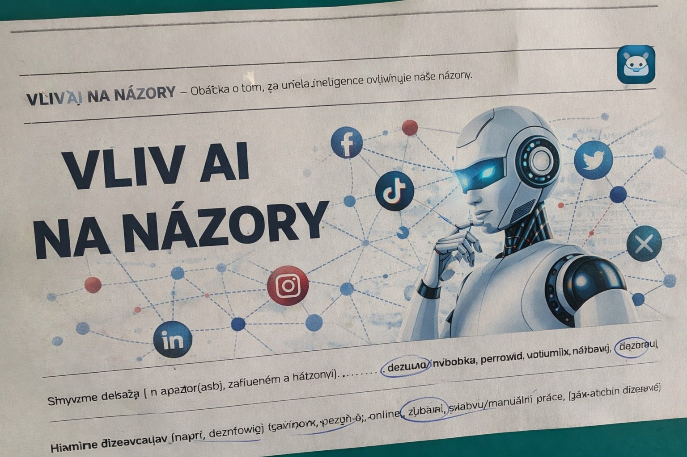
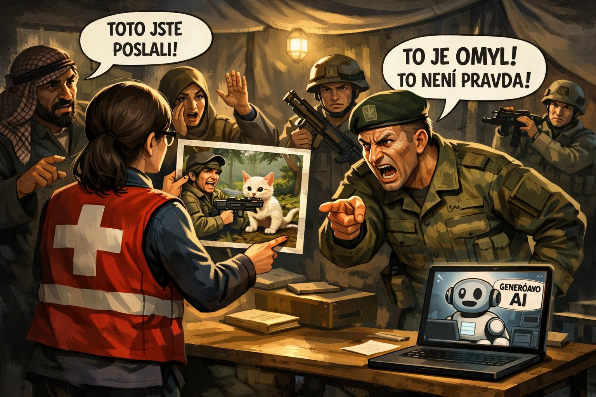
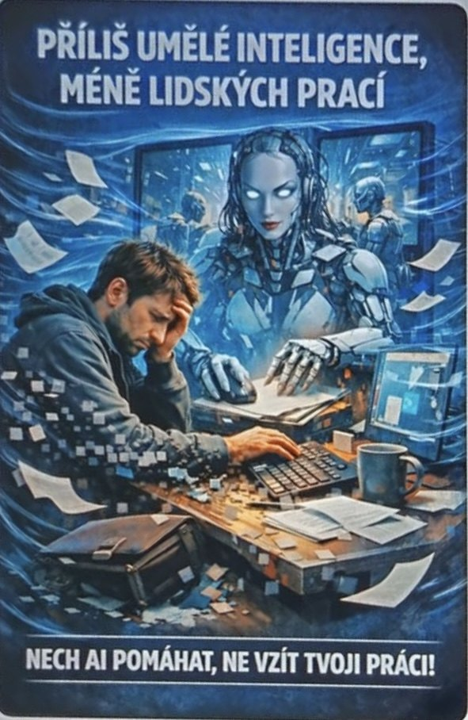

Podpořeno z programu O2 Chytrá škola.
AI očima osmáků
Jak žáci 8. tříd přemýšlejí o umělé inteligenci
ZŠ a MŠ
Mladá Boleslav17. listopadu 1325
Mladá Boleslav17. listopadu 1325
O našem projektu:
Osmáci se zamýšleli nad tím, jak umělá inteligence ovlivňuje náš každodenní život. Ve vlastních plakátech zachytili její možnosti, příležitosti i rizika – od pomoci při práci a tvorbě až po manipulaci, deepfake a otázky důvěryhodnosti informací.
Prohlédněte si jejich práce. Kliknutím na plakát jej můžete zvětšit.
Plakáty našich osmáků

Když člověk přemýšlí s AI

Vliv AI na naše názory

Jak poznat obsah vytvořený AI

Když se nedá věřit tomu, co vidíme

Deepfake a manipulace s videem

Jak AI ovlivňuje naši představivost

Člověk a umělá inteligence

AI v našem každodenním životě

Emoce a rozhodování

Příležitosti a rizika AI

Umělá inteligence a budoucnost práce
Co nám práce osmáků ukázaly?
Plakáty ukazují, že žáci vnímají umělou inteligenci jako nástroj, který může pomáhat při práci, učení i tvorbě. Zároveň si uvědomují, že její výstupy je potřeba posuzovat s odstupem a přemýšlet nad tím, kdo a za jakým účelem je vytváří.
Mezi důležitá témata patří důvěryhodnost obrázků a videí, možnost manipulace, ochrana soukromí i vliv AI na naše názory a rozhodování. Žáci tak nezůstali jen u toho, co všechno AI dokáže, ale zaměřili se také na odpovědnost člověka, který ji používá.
Hlavní myšlenka: Umělá inteligence může být užitečným pomocníkem, ale přemýšlet za nás nemůže. Je důležité ověřovat informace, chránit své soukromí a nenechat se přesvědčit vším, co na obrazovce vidíme.
„Ne všechno, co vidíme, je skutečné. A ne všechno, co vypadá skutečně, je pravda.“